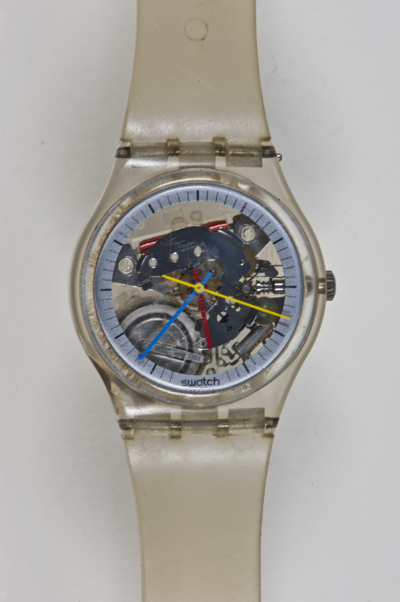
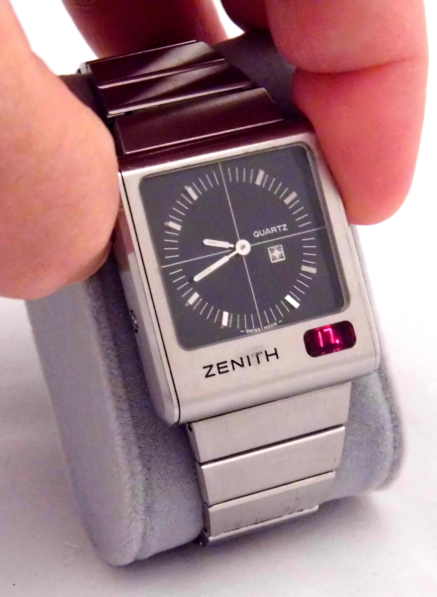
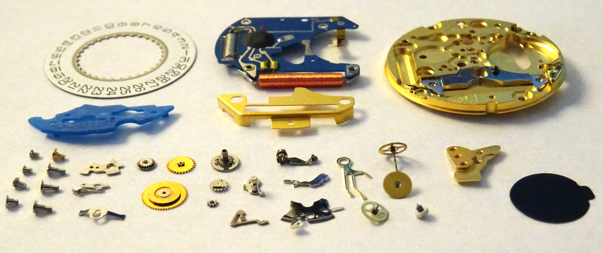
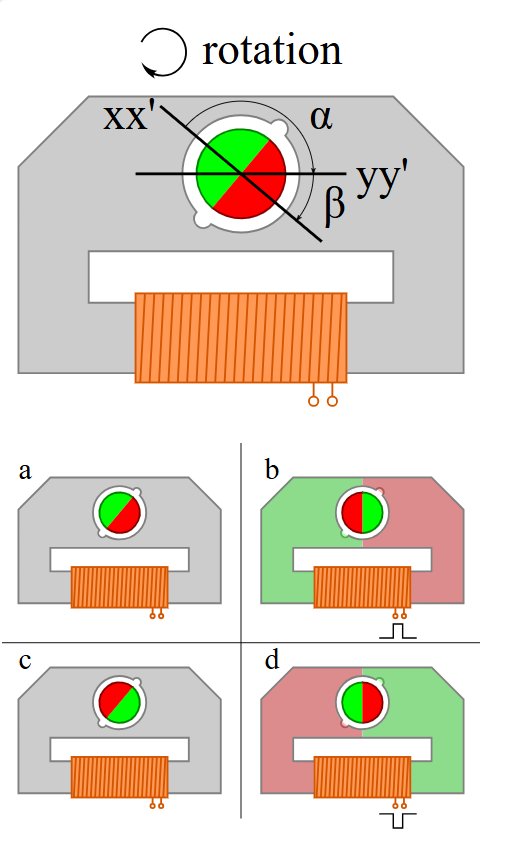
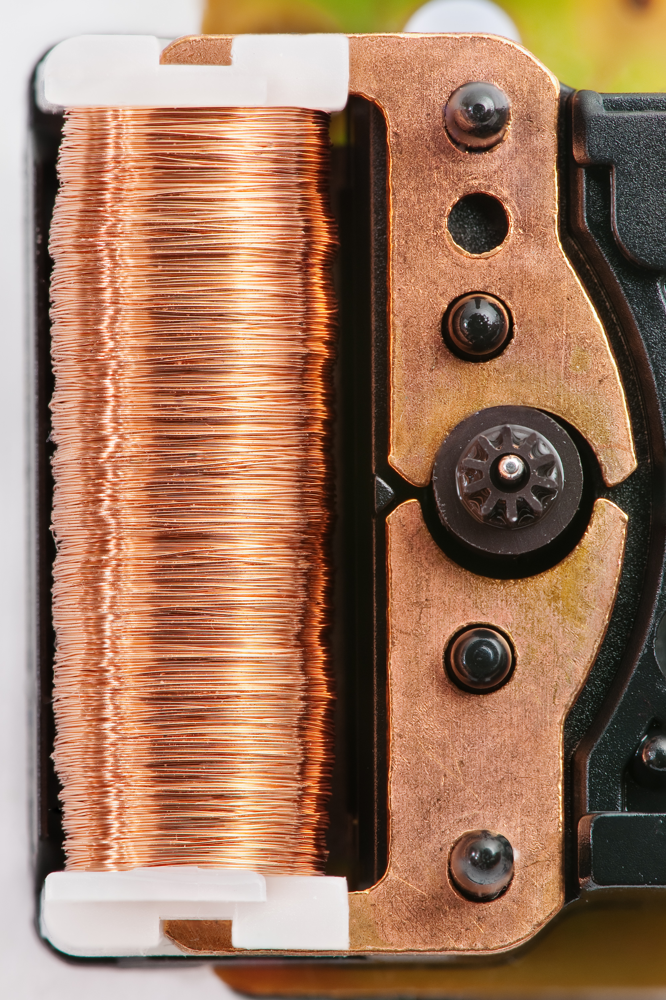

1. Geschichte der elektronischen Uhrmacherei
- 1940: Erste Quarzuhr (imposante Größe, vergleichbar mit einem großen Kühlschrank).
- 1958: Elektromechanische Uhr (Hamilton 500).
- 1960: Stimmgabeluhr mit 300 Hz Resonator (Bulova Accutron): Der Sekundenzeiger rückt in 300 kleinen Schritten pro Sekunde vor und erweckt den Eindruck einer fließenden Bewegung.
- 1968: Prototyp Beta 21 (Centre Électronique Horloger - CEH), Schweizer Quarzuhr mit einer Oszillationsfrequenz von 32'768 Hz.
- 1983: Einführung der Swatch®: vereinfachte Quarzuhr, bei der die Komponenten des Räderwerks und des Gehäuses direkt in den Gehäuseboden integriert und verschweißt sind.
- 1990: Funkgesteuerte Uhr: tägliche Zeitsynchronisation über Funksignale.
- 2010: GPS-Uhr (Seiko Astron): durch Satellitensignale automatisch angepasste Quarz-Zeitbasis.

Revolution 1983: Das in das Swatch-Gehäuse integrierte Werk
📷 ORIGINALER HANDSCHRIFTLICHER ZETTEL (01-46) — Geschichte der Elektronischen Uhr & Prinzipien
2. Anzeigearchitekturen: Analog vs. LCD-Bildschirm
Hinweis: Das Aufkommen des Quarzes betraf nicht nur die Massenishrmacherei[cite: 7]. Bereits in den 1970er Jahren entwickelten die renommiertesten Manufakturen der Haute Horlogerie (Rolex, Omega, Zenith) Quarzkaliber von außergewöhnlicher Veredelung, was den hohen Anspruch dieser Technologie bewies.

Zenith Futur TimeCommand (1975)
Ein perfektes Hybridbeispiel der Haute Horlogerie: traditionelle analoge Anzeige kombiniert mit einem digitalen Elektronikmodul (LED).
1. Quarzuhr mit analoger Anzeige (Zeiger)
Die Energie stammt aus der Batterie und speist den integrierten Schaltkreis (IC). Der IC regt den Quarz an, der mit 32'768 Hz schwingt. Der IC teilt diese Frequenz und sendet pro Sekunde einen bipolaren elektrischen Impuls an die Spule. Die Spule magnetisiert den Stator, der den Rotor um eine halbe Drehung (180°) dreht und so das Räderwerk sowie den Sekundenzeiger antreibt.
2. Vollständig elektronische Quarzuhr (LCD/LED-Anzeige)
Keine beweglichen mechanischen Teile! Der IC steuert direkt die Zeitbasis und steuert die Segmente des Bildschirms (Flüssigkristalle oder Leuchtdioden) an, mit der Möglichkeit einer Hintergrundbeleuchtung und der Anzeige mehrerer Funktionen auf Abruf.
3. Schlüsselkomponenten: Gedruckte Schaltung, integrierter Schaltkreis & Quarz

Explosionszeichnung Kaliber ETA-ESA 955.412: Deutliche Trennung zwischen mechanischer Platine, elektronischem Schaltkreis (blau), Spule (Kupfer) und Zeigerräderwerk.
* Bild: Gemeinfrei (CC0). ETA ist eine eingetragene Marke der Swatch Group SA. Verwendung ausschließlich zu Bildungszwecken.
- 1. Gedruckte Schaltung (PCB): Hergestellt aus Epoxidharz (isoliermaterial). Sie dient als Tragstruktur und integriert die leiterbahnen aus Kupfer.
- 2. Integrierter Schaltkreis (IC): Aus reinem Silizium gefertigt. Seine 4 Werkstattfunktionen:
- Den Quarzresonator speisen.
- Die Schwingungen zählen und teilen (Hz).
- Jede Sekunde den Antriebsimpuls an die Spule abgeben.
- Zusatzfunktionen steuern (Kalender, Thermokompensation etc.).
- 3. Die Stimmgabel-Quarzkristall:
- Material: Synthetischer Quarz, zugeschnitten in Form einer Miniatur-Stimmgabel.
- Piezoelektrischer Effekt:
• Unter mechanischem Druck ➔ Entstehung einer elektrischen Spannung an den Enden.
• Umgekehrt, unter elektrischer Spannung ➔ Verformung und kontinuierliche mechanische Schwingung bei 32'768 Hz.
- Empfindlichkeiten & Verhalten:
• Magnetismus: Quarz ist 100% unempfindlich gegenüber magnetischen Feldern (nur der Schrittmotor kann gestört werden).
• Stöße: Unempfindlich.
• Temperatur: Präzise kalibriert für maximale Genauigkeit bei 25°C. Jede thermische Abweichung (Kälte oder Hitze) führt zu einem Frequenzverlust, der einen Nachgang der Uhr verursacht.
📷 ORIGINALER HANDSCHRIFTLICHER ZETTEL (01-48) — Gedruckte Schaltung, IC-Funktionen, Piezoelektrischer Effekt & Temperatur
4. Quarz-Chronometer & Thermokompensation (COSC-Zertifizierung)
Um die zertifizierte chronometrische Präzision (COSC Quartz) zu erreichen, verfügt das Kaliber über einen Temperatursensor:
- Prinzip: Ein in den IC integriertes Thermometer misst kontinuierlich die Temperatur des Kalibers (zwischen -10°C und +60°C). Der IC berechnet die thermische Abweichung des Quarzes und passt das Zählen der Antriebsimpulse an (durch Inhibierung).
- Leistung: Ein thermokompensiertes Werk ist etwa 20-mal präziser als ein Standard-Quarzuhrwerk.
5. Die Uhrenbatterie & EOL-Warnfunktion (End of Life)
- Elektrochemisches Prinzip: Stromerzeugung durch irreversible Redoxreaktion zwischen zwei Metallen:
- Silberoxid (1.55 V): Standard für Armbanduhren (sehr flache Entladekurve).
- Lithium (3.0 V): Große Kapazität, großer Durchmesser und flaches Format.
- Werkstattregeln für den Umgang:
- NIEMALS mit bloßen Händen! Zwingend Kunststoff- oder isolierte Pinzetten verwenden (Gefahr von Mikrokurzschlüssen, säurehaltigen Fettablagerungen und Oxidation der Kontakte).
- Trocken bei Raumtemperatur lagern.
- Längere Lagerung von Uhren: Krone gezogen, um die Stromversorgung des Motors zu unterbrechen.
- EOL-Funktion (End of Life):
- Wenn die Spannung von 1.55 V auf ca. 1.20 V abfällt, rückt der Sekundenzeiger in 4-Sekunden-Schritten vor, um den Benutzer zu warnen.
- Es verbleiben ca. 2 Wochen bis 1 Monat Gangreserve vor dem vollständigen Stillstand (0.9 V).
- Obligatorische Funktion bei Taucheruhren (lebenswichtige Sicherheit).
📷 ORIGINALER HANDSCHRIFTLICHER ZETTEL (01-49) — Batteriemerkmale, Handhabung & EOL-Entladekurve
6. Lavet-Schrittmotor & Zeigerräderwerk
Der elektromotorische Lavet-Motor wandelt jeden elektrischen Impuls des IC in eine mechanische Verschiebung um:

Rotationskinematik des magnetisierten Rotors

Stator und Spule aus reinem Kupferdraht
- 1. Spule: Isolierter, gewickelter Kupferdraht, der beim Durchgang des Impulses ein Magnetfeld erzeugt.
- 2. Stator: Bauteil aus Weicheisen, das die Magnetfeldlinien zum Rotor leitet und bündelt.
- 3. Rotor: Trieb verbunden mit einem bipolaren Permanentmagneten (Nord/Süd). Das Magnetfeld dreht ihn um eine halbe Umdrehung (180°) pro Sekunde.
- 4. Reduktionsräderwerk:
Rotortrieb ➔ 1. Rad || Trieb des 1. Rads ➔ 2. Rad (Sekunde) ➔ 3. Rad ➔ Minutenrohr (Minutenanzeige)
Materialien: Räder aus Messing, Triebe aus gehärtetem Stahl.
📷 ORIGINALER HANDSCHRIFTLICHER ZETTEL (01-52) — Anatomie des Schrittmotors (Spule, Stator, Rotor) & Räderwerk
7. Zeigerausgleich, Hybridsysteme & Werkstattbilanz
- Ausgleich des Sekundenzeigers: Wegen des sehr geringen verfügbaren Motordrehmoments muss der Sekundenzeiger zwingend ein ausgeglichenes Gegengewicht besitzen, um einen übermäßigen Energieverbrauch zu verhindern.
- Hybriduhrwerke (Autoquartz / Kinetic):
- Kombination aus Quarz und wiederaufladbarem Akkumulator, der über eine mechanische Schwungmasse mittels Mikrogenerator (Dynamo) gespeist wird.
- Beispiele: Seiko Kinetic (Kinetic Direct Drive) und ETA Autoquartz (Swatch Group).
| Vorteile des Quarzes |
Nachteile des Quarzes |
| • Außergewöhnliche Präzision (30-mal höher als beim mechanischen Werk) |
• Abhängigkeit vom regelmäßigen Batteriewechsel |
| • Sehr wettbewerbsfähige Herstellungskosten |
• Empfindlichkeit des Ganges gegenüber Temperaturschwankungen (ohne Thermokompensation) |
| • Geringer Platzbedarf (ultraflache und kompakte Kaliber) |
• Begrenzte Lebensdauer elektronischer Komponenten langfristig |
| • Unempfindlich gegen mechanische Stöße und direkten Magnetismus |
• Fehlender Traditions- und Sonderechtheitswert (kein mechanischer Edelstatus) |
📷 ORIGINALER HANDSCHRIFTLICHER ZETTEL (01-53) — Zeigerausgleich, Autoquartz-Systeme & Werkstattüberlegungen

.jpg)